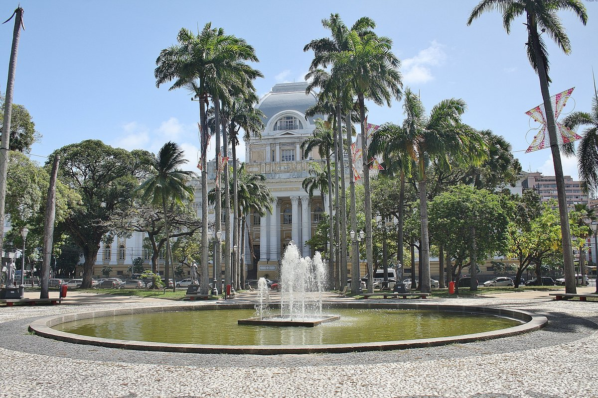
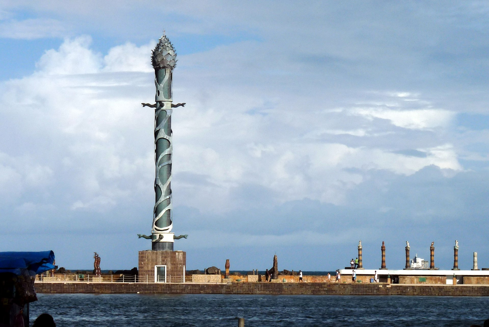

Ainda assim, nem tudo o que há para fazer no Recife Antigo está à vista. Apesar de o bairro não ser muito grande e o principal eixo turístico se concentrar em poucas ruas, vagar sem rumo não é um bom plano para este passeio, então segue aqui outros dois pontos turísticos do bairro.
Praça da República
Conjunto Arquitetônico da Praça da República.
Na Praça da República estão edificados o Palácio do Campo das Princesas (sede do governo estadual), o Teatro de Santa Isabel, o Palácio da Justiça e o Liceu de Artes e Ofícios de Pernambuco.
Há também vários monumentos na praça e entre as muitas árvores, destaca-se o centenário Baobá.
Parque das Esculturas Francisco Brennand
Parque das Esculturas Francisco Brennand, museu a céu aberto
Construído sobre um recife, em frente ao Marco Zero, tem como obra principal, a Coluna de Cristal com 32 metros de altura, confeccionada em argila e bronze e inspirada em uma flor descoberta por Burle Marx.
Texto extraído do blog Viagens e Caminhos.